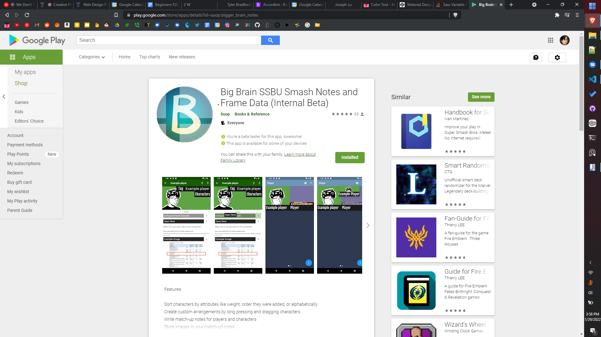
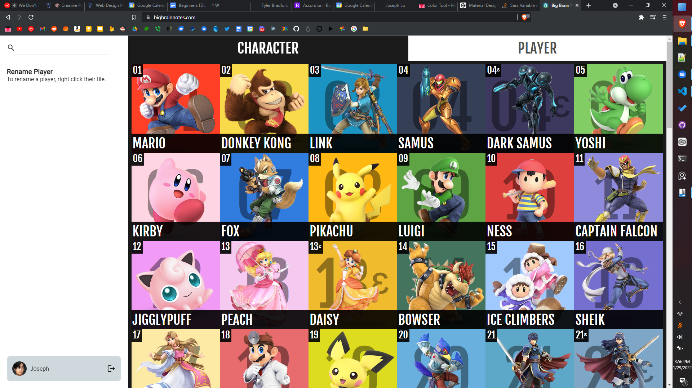
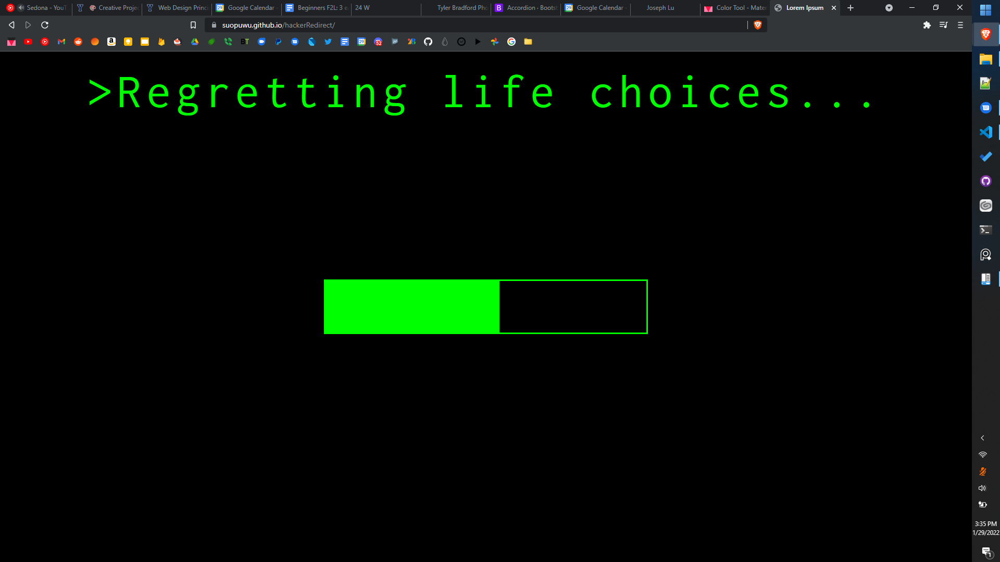
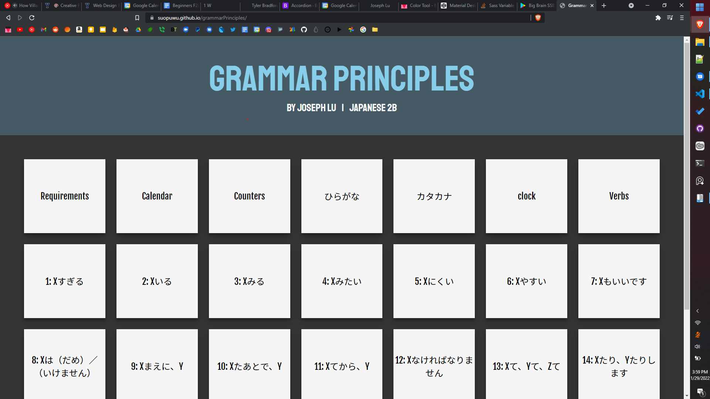
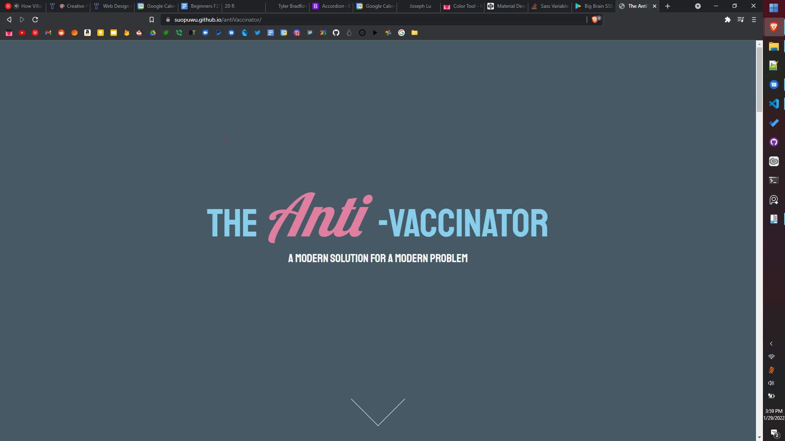

Some of my work
Big Brain Notes
This is a simple website I made to redirect to various presentations that I had to make in middle / high school in a funny way. The text and length of the "loading" bar can be changed.
Big Brain Notes Web
A half finished version of my mobile app that I ran out of motivation for.
Hacker Redirect
This is a simple website I made to redirect to various presentations that I had to make in middle / high school in a funny way. The text and length of the "loading" bar can be changed.
Grammar Principles
A Notes website that I made for my japanese class in high school. Not super complex, but I do think that it looks fairly nice.
Anti Vaccinator
A satire website I made to make fun of anti vaxxers. Includes a video, too!